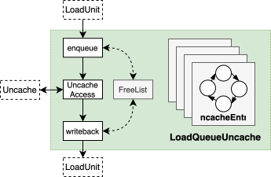
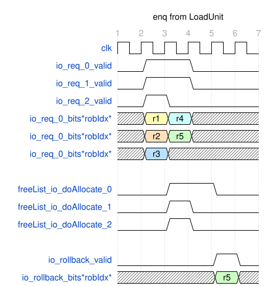
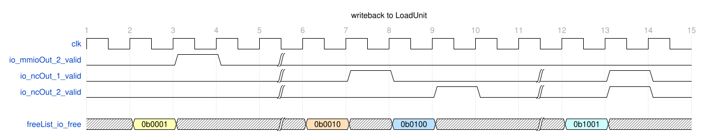
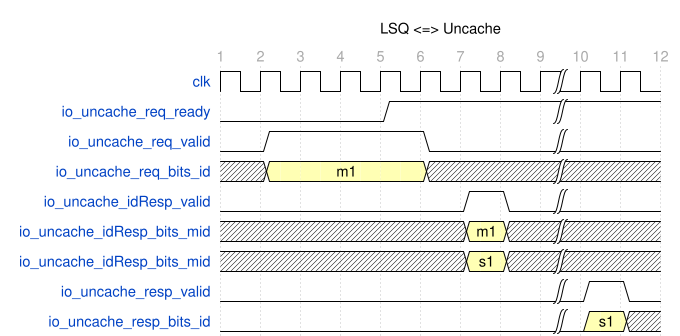
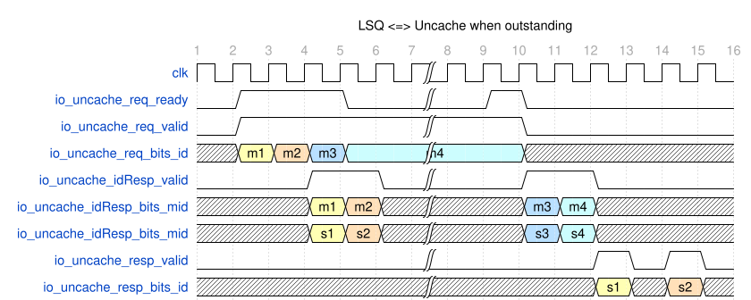
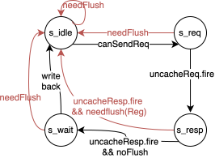

Uncache Load 処理ユニット LoadQueueUncache
| 更新日時 | コードバージョン | 更新者 | 備考 |
|---|---|---|---|
| 2025.02.26 | eca6983 | Maxpicca-Li | 初版完成 |
機能説明
LoadQueueUncache と Uncache モジュールは、uncache load アクセスを LoadUnit のパイプラインとバスアクセスの間で仲介する。バス側に近い Uncache モジュールの役割については Uncache を参照されたい。パイプライン側に位置する LoadQueueUncache は次の責務を負う。
- LoadUnit から送られてくる uncache load リクエストを受け取る。
- uncache アクセスの準備が整っているリクエストを選択し、Uncache Buffer に送る。
- Uncache Buffer から処理済みの uncache load リクエストを受け取る。
- 処理済みの uncache load リクエストを LoadUnit に返却する。
構造的には 4 エントリ（項数は可変）の UncacheEntry を持ち、各エントリが 1 件のリクエストの処理を担当し、一連の状態レジスタで具体的な処理フローを制御する。FreeList は各エントリの割り当てと解放を管理する。LoadQueueUncache はこれら 4 エントリに対して、新規エントリの割り当て、リクエスト選択、レスポンスの振り分け、デキューといった統括制御を行う。
特性 1：エントリ投入（入隊）ロジック
LoadQueueUncache は LoadUnit0/1/2 の 3 モジュールからリクエストを受け取る。リクエストは MMIO でも NC でもよい。まずリクエストの robIdx に基づいて時間順（最古から最新）に並べ替え、最も古いリクエストが優先的に空きエントリを得られるようにし、古いエントリがロールバックした場合でもデッドロックが発生しないようにする。処理に進む条件は、リクエストが再送中でないこと、例外が発生していないこと、そして FreeList に空きエントリがあり順に割り当てられることである。
LoadQueueUncache の容量が尽き、なお割り当てが受けられないリクエストがある場合は、未割り当てリクエストの中から最も古いものを選び rollback を発行する。
特性 2：エントリ削除（出隊）ロジック
エントリで扱っているリクエストが Uncache アクセスを完了して LoadUnit に返されたとき、または redirect によるフラッシュが起きたとき、そのエントリは出隊して FreeList の該当フラグを解放する。同一サイクルに複数エントリが出隊する可能性もある。LoadUnit への返却は 1 サイクル目で対象エントリを選び、2 サイクル目で戻す。
なお、uncache の応答を受け取る LoadUnit ポートはあらかじめ定義されている。現状 MMIO は LoadUnit2 のみ、NC は LoadUnit1/2 に返却する。複数ポートに返却する場合は、uncache entry ID をポート数で割った余りを用いて各エントリが返却できるポートを決め、そのポートに属する候補から 1 件を選んで返却する。
特性 3：Uncache との連携ロジック
reqの送信
第 1 サイクルで uncache アクセスの準備が整ったエントリから 1 件を選び、第 2 サイクルで Uncache Buffer へ送信する。送信するリクエストには、選択されたエントリ ID を mid として付加する。受信の成否は req.ready で判別する。
idRespの受信
リクエストが Uncache Buffer に受理されると、その翌サイクルに Uncache から idResp を受け取る。レスポンスには mid と、Uncache Buffer が割り当てたエントリ ID（sid）が含まれる。LoadQueueUncache は mid で内部エントリを特定し、sid をエントリ内に保存する。
respの受信
Uncache Buffer がバスアクセスを完了すると、結果を sid とともに LoadQueueUncache に返す。Uncache Buffer はリクエストをマージするため（詳細は Uncache を参照）、1 つの sid が複数エントリに対応する場合がある。LoadQueueUncache は sid を使って関連するすべてのエントリを特定し、それぞれにアクセス結果を渡す。
全体ブロック図

インターフェイスとタイミング
入隊インターフェイス例
下図では、連続する 5 件の NC が LoadUnit0/1/2 経由で順に到着し、LoadQueueUncache のエントリ数が 4 の場合を示す。先頭 4 件は空きエントリに正常に割り当てられるが、3 サイクル目に現れる r5 はバッファが満杯で割り当てられず、5 サイクル目で rollback が発生する。図では各サイクルで NC が順番に到着し r1 < r2 < r3、そして r4 < r5 であると仮定している。必要に応じてソート後の結果を io_req に差し替えれば、他のロジックは同じである。

出隊インターフェイス例
下図は mmioOut、1 サイクルに 1 件だけの ncOut、そして 1 サイクルに 2 件の ncOut を返すケースを示す。最初の例で詳しく説明すると、第 2 サイクルで書き戻すエントリを選択し FreeList を更新して 1 サイクル保持し、第 3 サイクルで LoadUnit へ書き戻す。後続の例も同様の手順で理解できる。

Uncache とのインターフェイス例
- outstanding がない場合：各段は 1 件の uncache アクセスしか発行できず（
io_uncache_req_readyが流量を制御）、Uncache からの応答を待つ。下図では、第 5 サイクルにio_uncache_req_readyがアサートされ uncache リクエストを発行し、第 6 サイクルで Uncache が受信、第 7 サイクルでidRespを返す。その後バスアクセスを経て、第 10+n サイクルにアクセス結果を受信する。

- outstanding がある場合：各段で複数の uncache アクセスを発行できる（
io_uncache_req_readyが流量を制御）。下図では m1～m4 のリクエストを連続送信し、第 4・5 サイクルで先頭 2 件のidRespを受け取る。この時点で Uncache が満杯となり、m3 は中間レジスタに保持され、m4 はio_uncache_req_readyが再びアサートされるまで待機する。第 9+n サイクルでio_uncache_req_readyが再びアサートされ m4 を送出し、第 10+n・11+n サイクルで m3 と m4 のidRespを受信する。以降のサイクルで順次アクセス結果が返ってくる。

UncacheEntry モジュール
UncacheEntry は 1 件のリクエストのライフサイクルを独立して管理し、状態レジスタ群で具体的な処理フローを制御する。主要な構成要素は以下のとおり。
req_valid：エントリが有効かどうか。req：リクエストに関するすべての情報を保持する。uncacheState：エントリの現在のライフサイクル段階。slaveAccept、slaveId：Uncache Buffer での割り当て有無と Uncache Buffer の ID。needFlushReg：遅延フラッシュが必要かどうかを示す。
特性 1：ライフサイクルと状態遷移
各 UncacheEntry のライフサイクルは uncacheState によって記述できる。状態は以下のとおり。
s_idle：デフォルト状態。リクエストが存在しない、または存在するが Uncache Buffer へ送出する条件を満たしていない。s_req：Uncache Buffer へ送出する条件を満たし、LoadQueueUncache に選ばれて中間レジスタが受信するのを待つ段階（理論上は Uncache Buffer が直接受信すべきだが、LoadQueueUncache が選択した後 1 サイクル中間レジスタに保持し、Uncache Buffer が受理しない場合はそのまま保持する）。UncacheEntry 自体は中間レジスタの存在を意識せず、リクエストが送信され受理されたかどうかだけを認識する。s_resp：中間レジスタに受理され、Uncache Buffer からのアクセス結果を待つ段階。s_wait：Uncache Buffer のアクセス結果を受け取り、LoadQueueUncache に選ばれて LoadUnit に返却されるのを待つ段階。
状態遷移図を下に示す。黒線は正常なライフサイクル、赤線は redirect によるフラッシュで異常終了するケースを示す。

正常なライフサイクルにおける各イベントは以下のとおりである。
canSendReq：MMIO リクエストは対応する命令が ROB 先頭に到達したとき送出可能。NC リクエストはreq_validが 1 になった時点で送出可能。uncacheReq.fire：エントリが LoadQueueUncache の中間レジスタに受理されたことを示す。次サイクルで Uncache Buffer からidRespが届き、slaveAcceptとslaveIdを更新する。uncacheResp.fire：Uncache Buffer からアクセス結果が返却されるイベント。writeback：s_wait状態で書き戻しが可能になったタイミング。MMIO と NC では書き戻し信号が異なるため区別する。
特性 2：redirect 時のフラッシュ
異常なライフサイクルは主にパイプラインの redirect によって起こる。redirect 信号を受け取ったら、現在のエントリが redirect 対象より若いかどうかを判定し、若ければそのエントリをフラッシュして needFlush を発行する。通常はすぐにエントリ内容をクリアし、FreeList に返却する。しかし Uncache のリクエストと応答は同じ uncache load リクエストに対応させる必要があるため、すでに Uncache へリクエストを送出済みであれば、Uncache からの応答を受け取ってからライフサイクルを終了させる必要がある。この「フラッシュ遅延」ケースでは、needFlush を直ちに処理できないため needFlushReg に保持し、Uncache 応答を受け取ったタイミングで処理とレジスタのクリアを行う。
特性 3：例外処理
LoadQueueUncache に関連する例外は以下のとおり。
- リクエストをバスに送出した際、バスが
corruptまたはdeniedを返した場合。この例外は UncacheEntry が書き戻す際にマーキングし、LoadUnit で処理する。